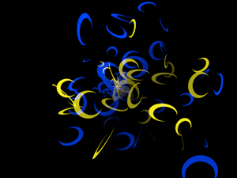
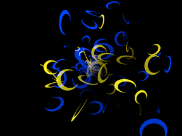
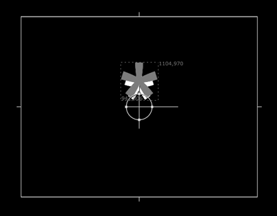

Particle Type pop-up> Custom Particles
The ability to use custom particles provides infinite flexibility in producing particle effects. There are two Particle Types that use custom particles: Sprites and Textured Polygons.
Try to keep image size as small as possible. A size no larger than 200x200 pixels is recommended for most types of effects. A good rule of thumb is to keep the custom particle image no larger than the largest visible particle. If the custom particle image is larger than largest visible particle, then Particular must do extra scaling operations for every particle, which will slow down the render speed considerably.
Sprite and Textured types use a custom image.
Example of a custom particle
Here is an example of applying a custom particle. At left, we have a crescent-shaped bitmap. In middle, we use the Texture (or Particle) input port to point to the node. At right, the crescent shape is emitted as Textured Polygons.

 

Tutorial: Create Your Own Sprite Particles
Let's create our own custom particles. We will use a Nuke text node as the custom particle along with the Sprite Particle Type.
To do so, add a new Text node to your project. (Draw>Text) Press 1 to connect the Text1 node to the Viewer1 node. Double click the Text1 node to open its properties and make the following changes:
• Change the message to a single asterisk (*).
• Set Justify for the Text1 node to Center and Center.
• Change the Size property to something large, such as 500. (Fine tuning of
this size will happen in Particular's Particle Size settings.)
• Change the Color to a light gray.
Here is what you will see:
Copy and paste the Text1 node so you have a duplicate. Text2 should appear connected to Text1 in the node graph. Double click the Text2 node to open its properties and make the following changes:
• Make the astrick smaller by changing its Size to 400.
•
Change its Color to white.
•
Change the position of Text2 until it is centered on
Text1. We set Text2> Translate to 0, -20 and kept Text1> Translate at 0, 0.
Here is what you will see:

Deselect both nodes and add a Particular node to the node graph. Connect Text2 to the Particle input port on the Particular node. You should now have a node graph that starts at Text1, connects to Text2, then connects to Particular. Now connect the Particular node to the Viewer1 node to preview. Make sure that Input1 goes from Particular to Viewer1 and Input2 goes from Text1 to Viewer1. (Click Shift-X if you need to switch the inputs.)
In Particular, set Particle> Particle Type to Sprite. Set Particle> Size to 20. Set Particle> Opacity to 50%.
Here is what you will see:
To colorize the custom particle, set Particle> Particle Type to Sprite Colorize.
Set Graph Mode to the Color over Life chart. Change Particle> Set Color to Over Life. Now the particles are colorized. Also try setting Particle> Particle Type to Sprite Fill. Both options are colorizing modes, but Sprite Colorize applies lightness to the particle, while Sprite Fill fills the sprite with a color wherever the alpha value is not 0.
Here is what you will see:
Let's change a few settings to show how the Textured Polygon type works compared to the Sprite. Textured Polygons and Sprites are both custom particles, and you can read about them in detail on the Particle Type page. Their main difference is the ability to have the Textured Polygons rotate in any 3D orientation to the camera, and that's what we will look at here.
Change the Particle Type to Texture Polygon Colorize. This has the same colorization effect as the Sprite but the Texture Polygon can now be rotated in 3D.
Open the Rotation group and change the Random Rotate Speed to a value of 2.0. The custom asterisk particles are now mapped onto 3D polygons that rotate independently in 3D space as the particles are emitted.
Our final effect: